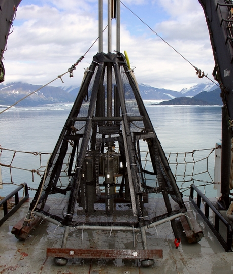
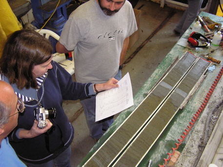
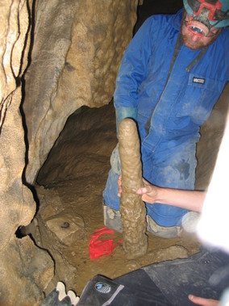
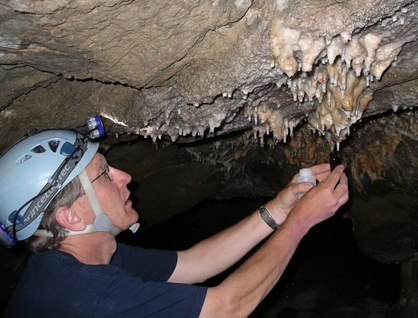
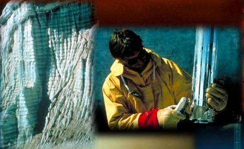
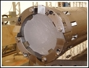
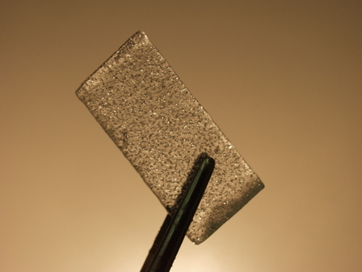

Data
Ocean sediments allow reconstructions of past conditions at the sea
surface or in the deep sea.

Speleothems (cave
deposits) such as stalagmites and stalagtites contain information on
past local
environmental conditions such as precipitation, temperature and
vegetation.

Ice cores: Bubbles in ancient ice retrieved from drilling
deep cores in the Greenland and Antarctic ice sheets contain
information on past atmospheric greenhouse gas concentrations.

last
updated Sep 22, 2006